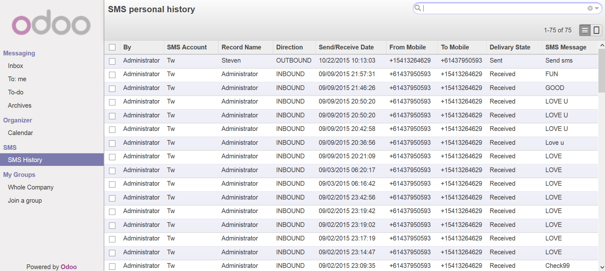
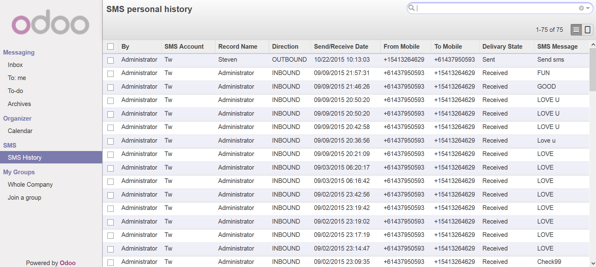

SMS Leads and Partners
Fast and straightforward smsing of leads and partners
Instructions
1. Setup an account and add credit
2. Enter mobile number in the lead/partner it will automaticlly get converted to e164 standard using the country
3. Simply select 'Send SMS' from the more menu and type in your message


 
